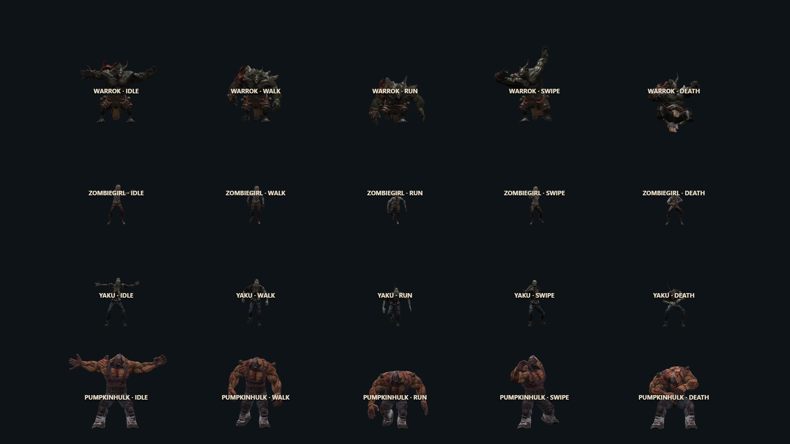
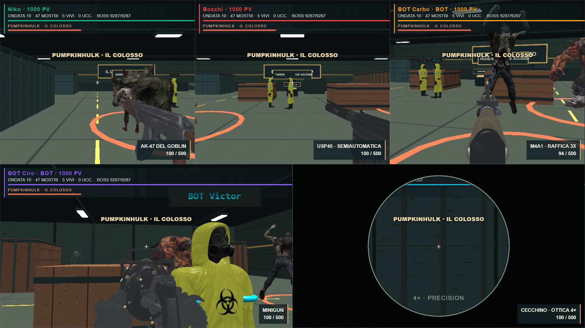
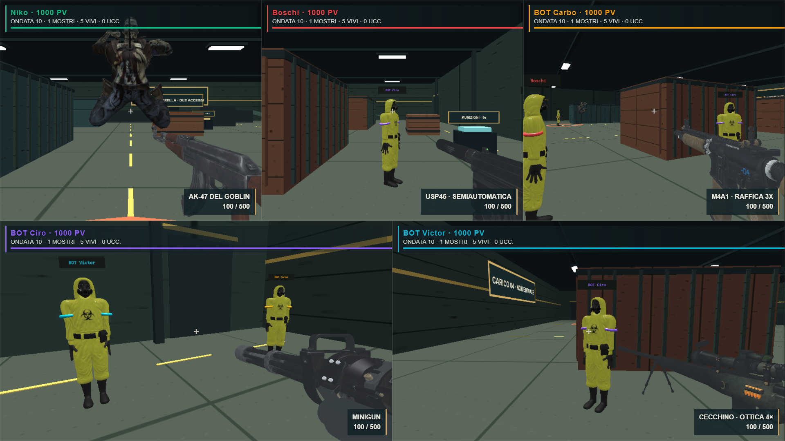
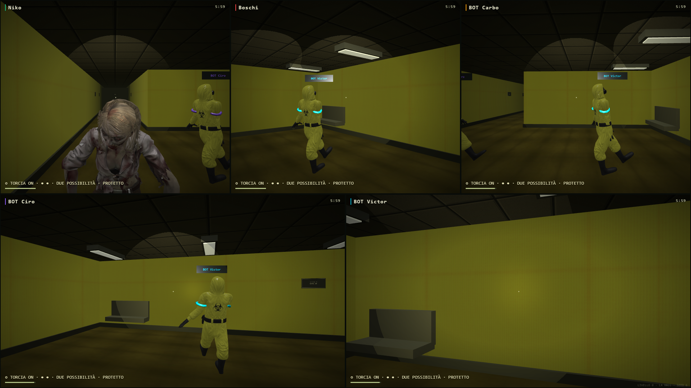

ORDA FINALE + BACKROOMS · MONSTER EXPANSION 1.2Più grandi. Più pericolosi.
Warrok +20,75%, Zombiegirl rapida, Yaku predatore e Pumpkinhulk boss. Quattro modelli, 13/10/11/10 clip, attacchi distinti e animazioni indipendenti. In Backrooms: nuovi modelli per Corridore e Stalker, inseguimenti più incisivi e due vite preservate.
48.6 FPS nel campione breve a cinque visuali, RTX 3050, interno 1669×939 e 20–22 nemici. Test con HP riforniti per mantenere attive le camere; ultimi ritocchi non rimisurati. Verifiche e limiti · Party Game

Quattro creature e cinque pose campionate per ciascuna: Idle, Walk, Run, Swipe, Death
Ondata mista con Warrok più grande e Pumpkinhulk — cinque visuali; HP riforniti esclusivamente dal test
Yaku: salto d’attacco nel renderer, con atterraggio segnalato; fixture di controllo del combattimento
Backrooms: Zombiegirl/Corridore e Yaku/Stalker, regole originali di catturaLicenze dei file forniti da verificare prima di una pubblicazione. Nessun commit, push o deploy.